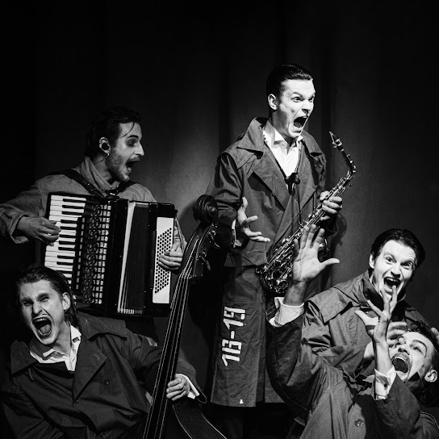

Створення гурту
|
|
Днем народження гурту Schmalgauzen визнають 9 липня 2020 року, коли відбувся їх перший
концерт. Початково гурт був сформований в університеті Карпенка-Карого, де зібралися всі
його учасники. За словами учасників гурту, вперше ідея створити гурт прийшла на першому
курсі після виконання університетського завдання "створення авторської пісні", що стало
своєрідним викликом для хлопців, оскільки грати хоч на якомусь музичному інструменті вмів
тільки Михайло Матюхін. Інші учасники просто взяли інструменти і навчались всьому "на ходу".
|
Назва гурту
|
|

Ідея для назви гурту прийшла тоді, коли хлопці вирішили провести музичний концерт, готуючи власні
авторські пісні. Під час одного з прослуховувань викладач Андрій Самінін (відомий український актор
театру, кіно і дубляжу) сказав: «Тут має бути якийсь Шмальгаузен!». Це слово стало для хлопців
символом енергії та драйву, яке в майбутньому стане назвою їх музично – театрального гурту.
|
Концепція гурту
|
|
Згодом гурт зазнавав змін як у своїй концепції, так і у складі. Спочатку було більше
акторства, а з часом — більше музики. Після 24 лютого 2022 року група випустила свій
останній альбом російською мовою і прийняла новий музичний шлях. Schmalgauzen працює
у жанрі пісенного мистецтва, в якому поєднуються театральні вистави та драматургія.
Фактично, це синтез музики і акторської майстерності у гармонійному співвідношенні.
У одних програмах може бути більше акценту на театрі, а в інших — на музиці, так само,
як і в їхніх піснях.
|